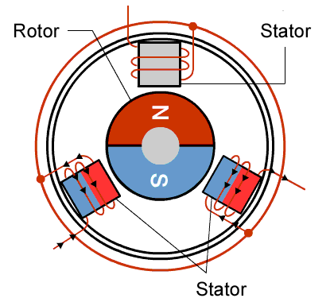

¿Qué es un dron?
Un dron, es un dispositivo volador que opera sin un piloto a bordo. Esta tecnología combina elementos de aeronáutica, electrónica y control remoto para crear una plataforma versátil que puede ser controlada a distancia o volar de manera autónoma siguiendo rutas pre-programadas.
¿Para qué sirve un dron?
Los drones tienen una amplia gama de aplicaciones prácticas en diversos campos.- Educación: Los estudiantes pueden adquirir conocimientos sobre ciencia, tecnología y matemáticas a través de un dron, utilizando la metodología STEAM.
- Investigación y medio ambiente: Se utiliza para mapear terrenos, monitorear animales y analizar la deforestación desde el aire.
- Construcción: Los drones se emplean para inspeccionar techos, puentes y torres, protegiendo así la integridad de los trabajadores.
- Entrega de productos: Amazon utiliza drones para entregar paquetería en lugares de difícil acceso.
- Seguridad: Los gobiernos implementan drones en protocolos de seguridad, vigilancia, búsqueda y rescate, monitoreo de incendios, tráfico y zonas peligrosas.
- Entretenimiento y arte: Se utilizan para grabaciones de películas y shows que requieren tomas aéreas, además de eventos deportivos como parte del espectáculo.

Ciencias que hacen posible el vuelo de un dron
El desarrollo y funcionamiento de un dron no dependen de una sola disciplina. Es el resultado de la integración de varias ciencias que colaboran para que este dispositivo vuele, se mantenga estable y cumpla tareas complejas. Estas son algunas de las principales:
-
Física y el vuelo de los drones:
La física proporciona las bases científicas que explican cómo un dron puede volar, mantenerse en el aire, maniobrar y responder a su entorno. A continuación se detallan los principales campos de la física involucrados:
-
1. Mecánica (Estática y Dinámica):
La mecánica estudia el movimiento de los cuerpos y las fuerzas que los provocan. En el caso de los drones, se relaciona principalmente con la dinámica de vuelo.
Principales conceptos aplicados:
- Peso (fuerza gravitatoria): Es la fuerza con la que la Tierra atrae al dron hacia abajo. El dron debe generar una fuerza de sustentación mayor o igual al peso para elevarse o mantenerse flotando.
- Empuje (thrust): Es la fuerza que generan las hélices al girar. El empuje debe vencer el peso para que el dron ascienda.
- Fuerza de arrastre o resistencia del aire: Es la oposición que ejerce el aire sobre el movimiento del dron. A mayor velocidad, mayor resistencia.
- Tercera Ley de Newton: "A toda acción corresponde una reacción igual y opuesta." Al empujar el aire hacia abajo, el dron recibe una reacción hacia arriba que lo eleva.
Ejemplo práctico:
Cuando un dron despega, sus cuatro rotores giran rápidamente para empujar el aire hacia abajo. Esta acción produce una reacción (sustentación) hacia arriba. Si el empuje total de los rotores es mayor que el peso del dron, este se eleva.
Ejemplo visual del despegue de un dron.
-
2. Electromagnetismo:
El electromagnetismo está presente en casi todos los componentes electrónicos del dron, especialmente en los motores y sistemas de control.
Aplicaciones principales:
- Motores sin escobillas (brushless): Son motores eléctricos de corriente continua que funcionan mediante campos magnéticos. Tienen alta eficiencia, bajo mantenimiento y gran precisión en el control del giro.
- Controladores electrónicos de velocidad (ESC):Utilizan principios del electromagnetismo para regular la cantidad de corriente que llega a cada motor, controlando así su velocidad y dirección de giro.
- Baterías y energía:Los drones funcionan con baterías de polímero de litio (LiPo) que almacenan energía química, convertida en energía eléctrica para alimentar todos los sistemas.
Ejemplo práctico:
Al aumentar la corriente enviada a un motor brushless mediante el ESC, se incrementa su velocidad de rotación. Esto hace que la hélice conectada gire más rápido, generando más empuje.
Ejemplo visual del funcionamiento de un motor mediante electromagnetismo.
-
3. Dinámica de fluidos (aerodinámica):
La dinámica de fluidos estudia cómo se comportan los líquidos y gases en movimiento. En los drones, se centra en el comportamiento del aire alrededor de las hélices y el cuerpo del dron.
Principales conceptos:
- Flujo del aire: Las hélices modifican el flujo del aire al moverlo rápidamente hacia abajo, creando sustentación.
- Presión diferencial:La forma de las hélices provoca una diferencia de presión entre la parte superior e inferior. Esta diferencia es lo que genera la fuerza ascendente o sustentación.
- Turbulencia:Es importante minimizarla para evitar inestabilidad. Un diseño aerodinámico ayuda a que el aire fluya suavemente.
- Perfil aerodinámico:Las hélices tienen una forma específica (como las alas de un avión) para mejorar la eficiencia del vuelo.
Ejemplo práctico:
Si el aire fluye más rápido por la parte superior de la hélice que por la inferior, se genera una presión menor arriba que abajo. Esto provoca una fuerza hacia arriba, ayudando a levantar el dron.

-
4. Matemáticas y el vuelo de los drones:
Las matemáticas permiten que el vuelo del dron sea calculado, programado y optimizado. Son fundamentales para garantizar la estabilidad, navegación, orientación y análisis de datos durante el vuelo.
Los drones requieren precisión para llegar a destinos específicos, evitar obstáculos o seguir rutas predeterminadas. Esto se logra mediante ecuaciones que describen su movimiento en el espacio.
A continuación, se detallan las principales áreas matemáticas involucradas:Conceptos aplicados:
- Ecuaciones paramétricas: Se usan para describir trayectorias curvas o rectas en coordenadas tridimensionales (x, y, z).
- Interpolación y optimización: Permiten suavizar trayectorias o encontrar la mejor ruta para reducir tiempo o consumo de batería.
- Algoritmos de planificación: Como Dijkstra o A*, ayudan a trazar rutas seguras y eficientes evitando obstáculos.
- Funciones seno, coseno y tangente: Se utilizan para calcular inclinaciones y rotaciones.
- Ángulos de Euler (roll, pitch, yaw): Describen cómo se orienta el dron en el espacio tridimensional.
- Triángulos y vectores: Para determinar altitud, distancia horizontal, inclinación del terreno, etc.
- Vectores: Representan dirección y magnitud del movimiento (posición, velocidad, aceleración).
- Matrices de rotación y cuaterniones: Se utilizan para rotar el dron sin errores como el "gimbal lock".
- Álgebra lineal: Permite resolver ecuaciones que determinan cómo deben actuar los motores para estabilizar el dron.
Ejemplo práctico:
Un dron que debe inspeccionar varios puntos GPS usa un algoritmo para calcular la ruta más corta entre ellos, minimizando el consumo de energía y tiempo de vuelo.
-
5. Electrónica y el vuelo de los drones:
La electrónica es esencial para el funcionamiento de los drones, ya que permite el control de motores, sensores, comunicación, navegación y procesamiento de datos. A través de circuitos electrónicos, los drones pueden ejecutar acciones precisas y adaptarse a distintas condiciones del entorno.
Componentes clave:
- Microcontrolador: Ejecuta el software de vuelo (firmware) y realiza los cálculos necesarios para el control del dron.
- IMU (Unidad de Medición Inercial): Incluye acelerómetros, giroscopios y a veces magnetómetros que detectan la orientación y movimientos del dron.
- Conectores y buses: Permiten la comunicación con otros componentes como GPS, cámaras o módulos de radio.
- Modulación por ancho de pulso (PWM): Técnica usada para controlar la velocidad de los motores mediante señales eléctricas.
- Corriente y voltaje: Los ESCs regulan el flujo de electricidad que llega a los motores.
- Frecuencia de conmutación: Determina la rapidez con la que el motor puede cambiar su velocidad de rotación.
- GPS: Para conocer la ubicación geográfica del dron en tiempo real.
- Barómetro: Mide la presión atmosférica y ayuda a calcular la altitud.
- Ultrasonido o LIDAR: Para medir la distancia al suelo u otros objetos cercanos (evitación de obstáculos).
- Cámaras y sensores ópticos: Se utilizan para navegación visual o grabación.
Ejemplo práctico:
Si el dron detecta que está inclinándose hacia la izquierda, la placa controladora ajusta la velocidad de los motores derechos para nivelarlo automáticamente.

Ensamblaje de un prototipo de dron.
-
6. Geografía y el vuelo de los drones:
La geografía influye significativamente en el uso, planificación y operación de los drones. Contribuye tanto a la navegación como al análisis del entorno, permitiendo aplicaciones en cartografía, monitoreo ambiental, agricultura, seguridad y más.
Los drones pueden capturar imágenes aéreas y datos geoespaciales que luego se integran en sistemas SIG para crear mapas detallados y precisos.Aplicaciones clave:
- Fotogrametría: Técnica que permite crear modelos 3D del terreno a partir de fotografías aéreas tomadas por drones.
- Mapas de elevación y topografía: Los drones ayudan a identificar elevaciones, pendientes y características del terreno.
- Análisis espacial: Permite identificar cambios en el uso de suelo, deforestación o urbanización.
- Relieve: Valles, montañas o acantilados pueden interferir con la señal o el vuelo.
- Vegetación: Zonas boscosas o con árboles altos requieren vuelos más altos o maniobras precisas.
- Hidrografía: Volar sobre cuerpos de agua implica mayor precaución por el riesgo de pérdida del dron.
- Agricultura de precisión: Mapas de cultivo, detección de zonas secas o afectadas.
- Gestión del territorio: Planificación urbana, monitoreo de infraestructura o construcciones.
- Prevención de desastres: Vigilancia de zonas de riesgo por deslaves, inundaciones o incendios forestales.
Ejemplo práctico:
Un dron sobrevuela una zona montañosa para captar imágenes que luego se utilizan para elaborar un modelo digital del terreno en un software SIG.
-
1. Mecánica (Estática y Dinámica):
Ejemplo visual del funcionamiento de un dron utilizado en topografía.